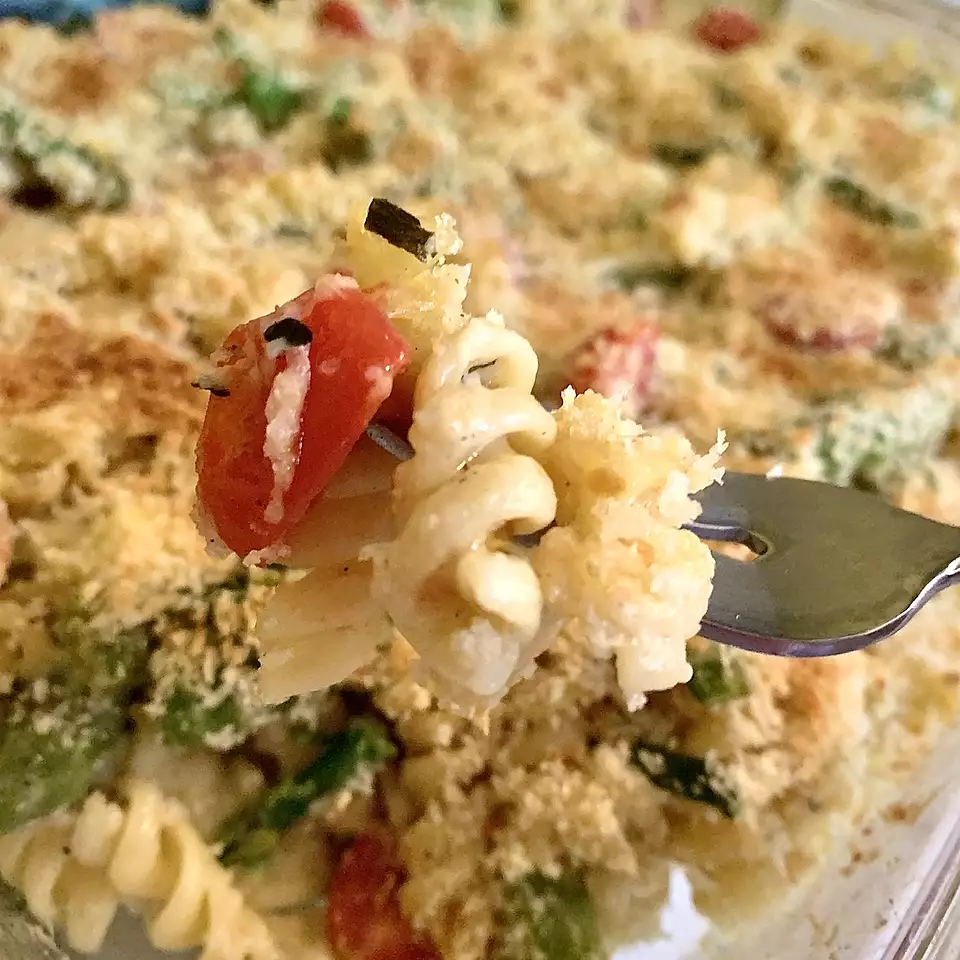

Primavera Casserole

Description
Ingridients
- 8 ounces shaped pasta such as gemilli, fusilli, or rotelle
- 3 tablespoons olive oil
- 1 large red bell pepper, cut into 1/2-inch dice
- 1 large yellow squash, quartered lengthwise, cut into 1/4-inch pieces
- 2 cloves garlic, thinly sliced
- 4 ounces sugar snap peas, strings removed, halved
- 6 asparagus spears, ends trimmed, cut into 1-inch pieces
- 2 tablespoons flour
- 1 teaspoon salt
- 2 cups milk
- 1 cup grape tomatoes, halved
- 1 cup grated Parmesan cheese, divided
- ⅓ cup chopped fresh basil
- ¼ cup panko bread crumbs
Steps
- Preheat oven to 400 degrees F. Spray a 9x13-inch baking dish with cooking spray.
- Cook pasta according to package directions. Drain and transfer to a large bowl.
- Meanwhile, heat oil in a large skillet over medium heat. Cook bell pepper, squash, and garlic, stirring occasionally, until pepper is crisp-tender, 7 to 10 minutes. Add snap peas and asparagus and cook, stirring, until asparagus is crisp-tender, 2 minutes more.
- Put flour and salt in a bowl and whisk in milk until smooth. Add flour mixture to skillet and bring to a simmer over medium heat, stirring frequently, until sauce is lightly thickened, 3 to 5 minutes.
- Pour mixture over pasta and stir in tomatoes, 3/4 cup parmesan, and basil. Transfer to prepared baking dish and sprinkle with panko and remaining 1/4 cup parmesan. Bake until top is lightly golden and sauce is bubbling, about 15 minutes.
Main Page